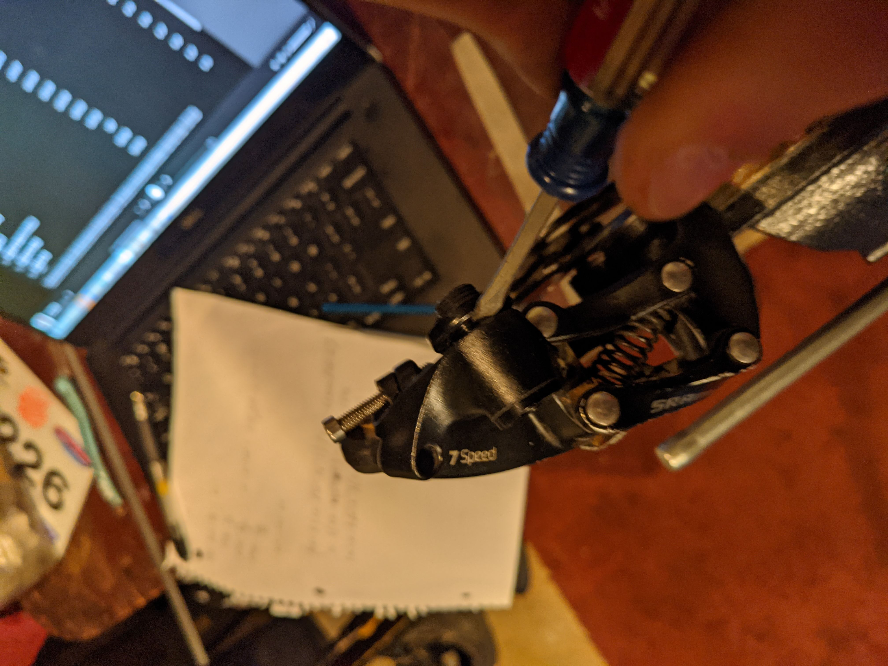
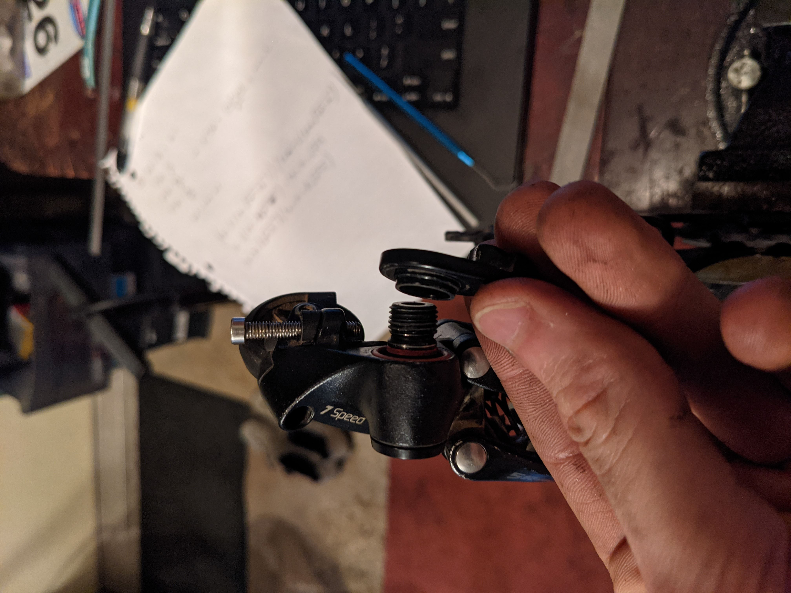
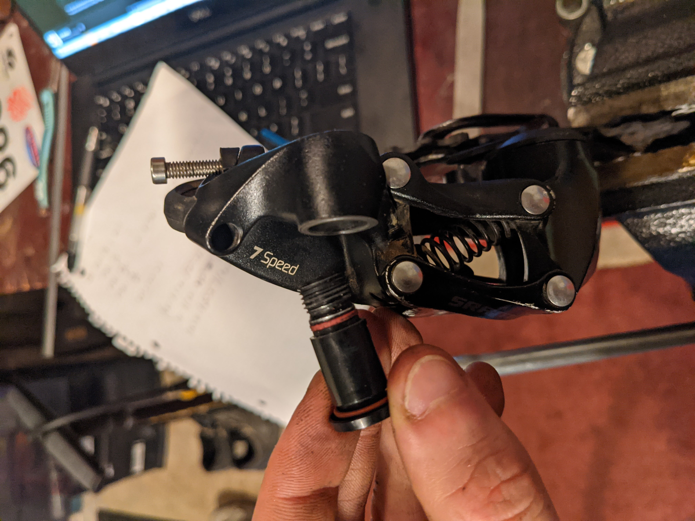
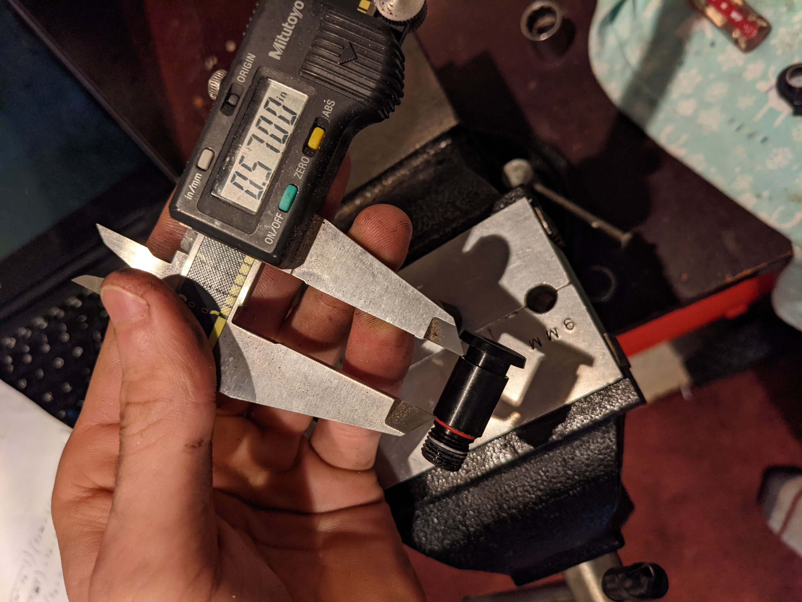
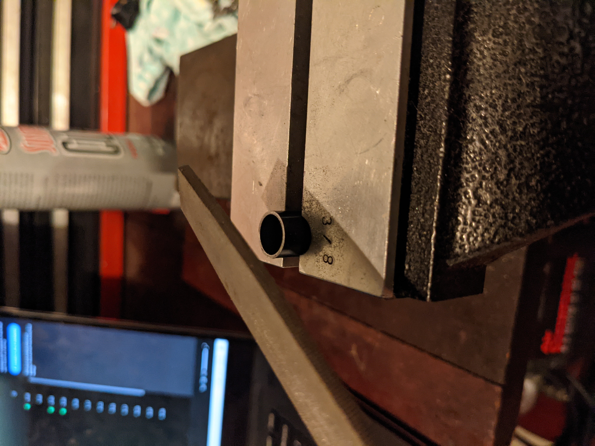
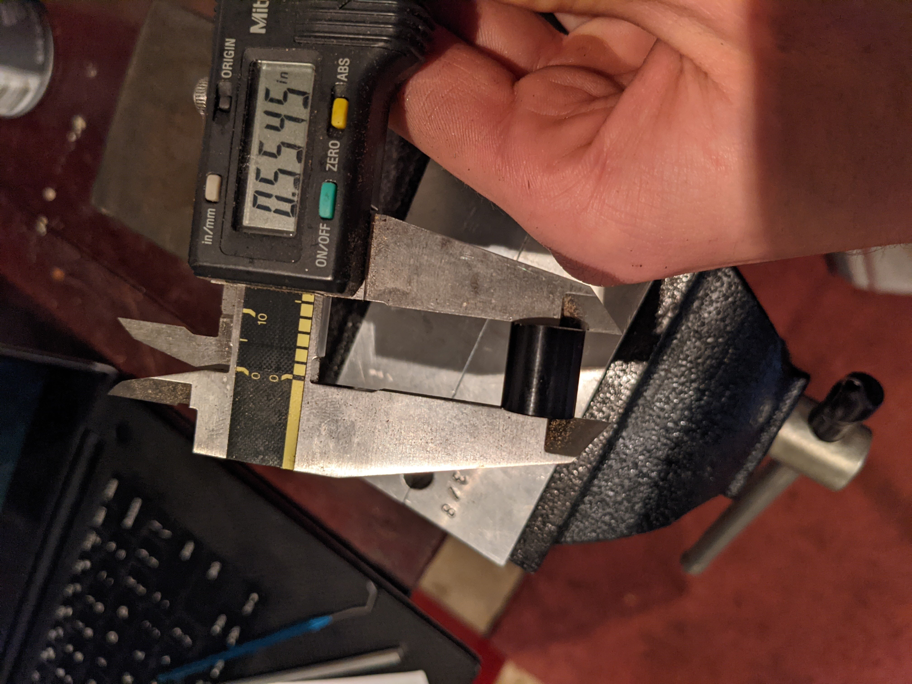

SRAM GX DH 7 Speed "Hall Lock"
05-29-2021
Motivation
Inspired by
Typical deraileurs can move backward on the b-tension plate. This lets you remove the rear wheel and lets the derailleur move backwards on impacts. What really happens is that the derailleur bounces around when riding rough trails. If you check your bracket you'll most likely find it worn down to bare aluminum where the b-screw contacts it.
Aaron Gwin's Mechanic John Hall made a solution to lock the derailleur on the TRP downhill drivetrain. I wanted this feature on my downhill bike, which has a SRAM GX 7 speed drivetrain. I couldn't find anything detailed on the internet already for this groupset! But I had a spare broken derailleur to test on.
Procedure
Tutorials I saw on the internet showed a weird retaining ring keeping the deraileur bolt, but on the GX 7 spd it's only held together by o-rings and a light press.
Once you have your derailleur off, jam a flathead or a pick and pry the b-tension plate off.
  This will now let you remove the bolt and get to the bushing. Basically you need to shorten either the bushing or the b-tension plate to allow the main bolt to clamp down the joint instead of clamping the bushing.
The stock bushing length is ~.570". I took ~0.015" off with a file---less would probably work just as well.
  Re-assemble the main bolt assembly the same way you take it apart---it does take a bit of force to push over the o-rings. I've found a bit of slickoleum grease helps.
Now when you bolt on your derailleur it will not move---hall lock mod completed. Even passes the plastic mallet test.